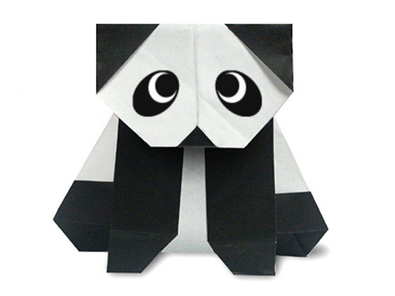
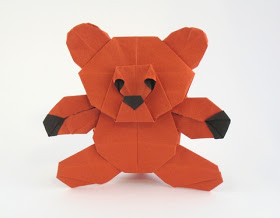
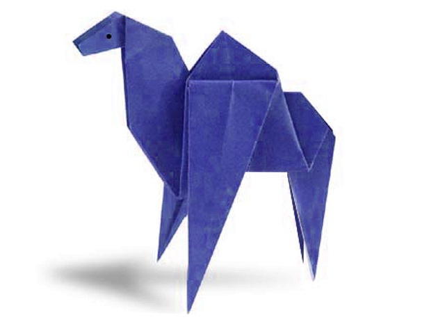

Interesting facts about chameleon
- Chameleon are reptiles that are part of the iguana suborder
- Changing skin color is an important part of communication among chameleon
- Most chameleon have a prehensile tail that they use to wrap around tree branches

Interesting facts about pigeon
- Pigeon are incredibly complex and intelligent animals
- Pigeon are renowned for their outstanding navigational abilities
- Pigeon have excellent abilities

Interesting facts about panda
- They have great camouflage for their environment
- Their eyes are different to normal bears.
- But they do occasionally eat something other than bamboo.

Interesting facts about panda
- The term bear-hug was first recorded in 1846.
- The Teddy Bears' Picnic song was originally called The Teddy Bear Two Step
- The Oxford English Dictionary dates the first use of the term teddy bear to 1906

Interesting facts about camel
- Camels have three sets of eyelids and two rows of eyelashes to keep sand out of their eyes
- Camels have thick lips which let them forage for thorny plants other animals can't eat
- Camels are very strong and can carry up to 900 pounds for 25 miles a day.

Interesting facts about camel
- Cicadas can survive a huge fall as babies, or nymphs
- The loud whirring or buzzing sound you hear is an all-male cicada chorus
- Most have red-orange eyes.